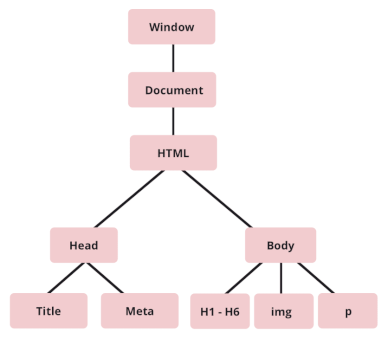

The three main languages used to build websites are HTML, CSS, and JavaScript. HTML is a markup language which uses tags to define elements within a document. CSS is used to style HTML documents. JavaScript is the programming language used to allow for interaction with HTML elements and CSS styles.
Here's an analogy for these three languages:
Let's say for example you get terribly seasick whilst on the Interislander Cook Strait Ferry, so you need to find another solution to travel between the North and South Island. The solution is build a 100km bridge between Wellington and Picton!
With your trillion dollar fortune you get the bridge built in a couple days, its super ugly though. This current structure can be thought of as your HTML. After spending your fortune on the bridge you could cross it now, but there's no median lines, rumble strips, barriers or signage. Simply put it's not user friendly at all.
To spruce up your bridge a bit you overthrow the government of New Zealand in a coup to reallocate public funds towards your project. After a couple decades you get the bridge to pass health and safety checks, have pretty colored road lines, and have signs that point to stuff. The bridge is now user friendly. This current structure can be thought of as your HTML & CSS.
The year is now 2050 and cool people like yourself don't drive cars anymore, they teleport. Time to cash in on all the car drivers still using your bridge! You install toll booths throughout the bridge and hire DroneBot3000 enforcement officers to react to driver behaviour. Drivers that do not pay are instantly vaporised by your DroneBot3000 army, whereas drivers that frequently use the bridge are rewarded with discounts. The bridge now reacts to driver/road user input! This current structure can be thought of as your HTML, CSS, & JavaScript.
The DOM (Document Object Model) is a data representation of objects that comprise the structure and content of a document on the web.
To manipulate a HTML element with the DOM you'll first need to select the HTML element you want to change. After selecting the element you can edit its properties, such as its applied color style.
For example:
See the Pen Untitled by Hamish Mourie (@hamish-mourie) on CodePen.
Control flow is the order in which function calls, instructions, and statements are executed or evaluated when a program is running.
Loops are used to repeatedly run a block of code until a certain condition is met.
An example of a control flow in everyday real life can be thought of as a routine. For example as a morning routine: 1. Wake up. 2. Bathe in your gilded bathtub. 3. Adorn your Balenciaga robes 4. Have caviar and avocado on toast for breakfast.
An example of a loop in everyday life can be thought of doing something multiple times until stopping it based upon a specific reason. For example, living it up large in someone else's mansion every day until you're kicked out.
An array stores a collection of multiple items under a single variable name. Array elements have index-value pairs. JavaScript arrays are zero-indexed, meaning the first element of an array is at index 0 and not at index 1.
An object stores various keyed collections under a single variable name. Object elements have key-value pairs.
A value in an array can be retrieved by calling its index number (e.g. array-variable.0 will return the first value in the array).
A value in an object can be retrieved by calling its key (e.g. object-variable.KEY-NAME will return the value in the object of the key specified).
A function allows you to define a block of code, give it a name and then execute it as many times as you want. A function can be used over and over again, rather than writing it out multiple times. Which is why it's helpful to write functions!
Functions enable programmers to break down or decompose a problem into smaller chunks, each of which performs a particular task.